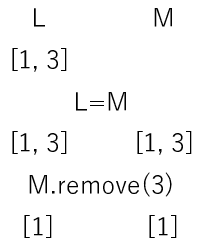
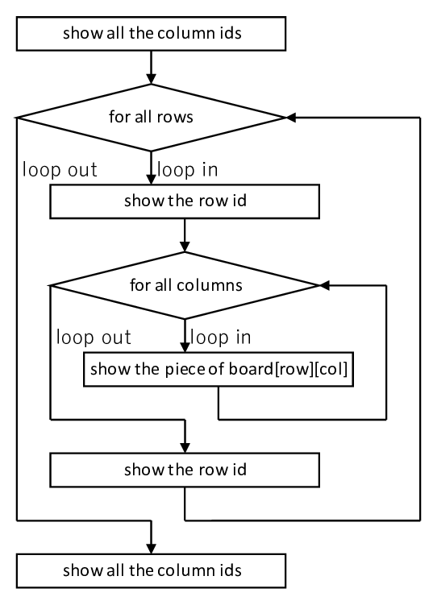

Stage 3 盤面をつくる
前回の Stage 2 であらかた指針が決まりましたので、今回からはついにコーディングへ入っていきます。お待たせいたしました。
予告でも申し上げておりますが、このステージ以降ではオブジェクト指向をフルに使います。経験ない方はまず勉強なさってからいらっしゃい。
目次
3-1 定数決め
まずは config.py をご覧ください。え？まさかまだ私のコード見てないんですか。それは困りましたね。仕方がない。このリンクの先に Clone or download ってボタンがあるはずだから、そこ押して ZIP ファイル形式なり何なりでダウンロードするとかして
で、その中に config.py というファイルがあります。そちらをご覧ください。あまりプログラミングらしい事せずに定義ばかりしているやつです。このファイルでは文字通り「設定 configure」が主目的ですから、基本的に定数や変数の宣言がメインです。
まず一番最初に sys と logging をインポートします。直下で logging の初期設定を行います。ログと言って、ユーザーには見えないけどプログラムしている人には見える print 関数の役割をしてくれます。主にデバッグと言って「プログラムが意図した通りに動いているか」検査するのに使います。特筆すべきはこの機能、レベルを設定する事で「これより低いレベルのログは出さない」などと設定できます。詳しくは他の人の解説を当たってください。私より上手い解説がゴロゴロ転がっているので是非。
ログを設定したら、今度は盤面の大きさを考えます。デフォルトでは SIZE = 8 としています。つまり 8 × 8 の盤面を使うという意味。もちろん増減させても動くようにはなっていますが、SIZE が奇数の時は有無を言わさず強制終了します。そのシステムが下にある if 文です。
下っていくと、インデックスで使う用に ROW と COL という二つの定数を宣言しています。私のコードでは [row, column] という形の配列を多用しますので、list[ROW] とすれば list の row の値が、list[COL] とすれば column の値がえられるようにしています。
その下は board に入れる値です。2-2 で考えた仕組みを使うため、石なし・黒・白それぞれに名前を振っています。
その次はゲームが進行中か決着がついたかを表す値です。追々出てきます。
0 と 1 だらけの 2 重配列になっている WHOLE_DIRECTION は、タテヨコナナメ 8 方向すべてを表します。このコードで方向は [上に移動するマス数, 右に移動するマス数] の形の配列で表します。例えば真上は [1, 0], 左下は [-1, -1] といったように。また、現在 [2, 3] にいる状態で左に 1 マス ([0, -1]) 移動したいと思ったら、[2, 3] → [2+0, 3-1] という操作で行くことができます。
最後にある関数 InBoard は「インデックスが盤面の中に収まっているか」を判別する関数です。例えば「[row, col] にある石白黒どっちのですか」と言う問いかけに対して、row が SIZE + 2 とかなのに board[row]... としてしまうとエラーになりますよね。これを未然に防ぐために InBoard を使います。引数はリストのインデックスですから 0 スタートであることに注意してください。
3-2 初期設定
board.py というファイルに移ります。まず copy モジュールをインポートし、さらに 3-1 で作った config もインポートします。from config import * となってますよね。例えば上でインポートした copy にある copy 関数を使いたい場合、このファイルの中では copy.copy の形にしないといけませんが、from config import * とした config の中身はいちいち config. をつける必要がありません。特に config ファイルの中身はいやというほど使いますので、手間が少ないに越したことはないでしょう。
さて、Board クラスです。一番上にある __init__ はコンストラクタと言って、このクラスを起動したときに実行されるメソッド(クラス内の関数)になります。平たく言えば初期設定。
盤面を表すリストを引数にしています。つまり 2-1 でいう board ですね。もし board として適切な形であれば、このクラスの board にそっくりそのままコピーします。ここでは必ず copy.deepcopy 関数を使ってください。例えばリスト L == [1, 3] を M = L として M に代入し、M.remove(3) のように代入先のリストに手を加えると、代入元の L にも同じ操作がされてしまいます。というのもリストは参照渡しと言って、L に格納されているのはリストそのものではなく「リストがあるコンピューター上の場所」なんですね。ですから M = L というのは「L のある場所を M に格納」しているので、L も M も実質的に同じものを指しています。したがってどちらかをいじるともう片方もつられて変わってしまう。それを回避するために copy.deepcopy という機能で、中身は同じだけどコンピューター上の場所がまったく違うリストを作り直しているんです。
もしコンストラクタ __init__ の引数のリストが有効なものでなければ、初期配置で盤面を作りましょう。まずは board という名前で 8 × 8 マスの値がすべて 0 のリストを作ります。それが for 文のところです。その次に、最初に並べる石を並べます。

この写真の並べ方ですよ。2-2 で決め 3-1 で定義した通りに、board の指定の位置に白黒の石をおきます。必ず黒が右上と左下、白が左上と右下になるようにおいてください。ルールで決められています。
あとは game_status に進行中 GAME_PRC を、勝者 winner に「決まっていない」EMPTY を格納したら、コンストラクタ __init__ は終わりです。
3-3 盤面表示
BoardPrint メソッドに入ります。ユーザーに盤面を見せる機能です。上で御覧に入れた画像のようにします。フローチャートはざっとこんなもんです。
まず最初に列番号であるアルファベットを盤面上部に表示させます。加えてマスの区切りがわかりやすいように横線を入れます。
ここからは for 文に行って各行ごとに操作します。まず盤面の左側に「ここが何行目か」を表す行番号を入れます。ユーザーはこの番号を頼りにマスの位置を指定しますので、是非忘れないでください。パラメーター row が 0 スタートであるのに対し、ユーザーに見せる行番号は上から 1, 2, 3, ... とするのが望ましいので、表示させる数字は row + 1 です。後ろに縦線を入れて盤面の端を表します。print の中に end="" がないと改行されてしまいますのでご注意を。
さらに for 文を使って列ごとに操作します。board[row][col] の値が EMPTY であれば、そのマスには何も置かれていませんから空白を出力します。WHITE なら白丸、BLACK なら黒丸です。私の実行環境はバックグラウンドが黒なので中抜きが黒、塗り潰しが白なのですが、ここは皆さんの実行環境に合わせてご自分で調節してください。
それくらいできるでしょ。
石や空白の後に縦線が入っていますが、これはマスを区切る線です。
col の for 文を抜けたらもう一度行番号を入れて改行します。そして横線を入れてマスを区切ったら row の for 文を抜けます。
最後の最後でもう一度 col の番号を入れたらおしまいです。お疲れ様でした。
次回予告
ここまでで盤面の初期設定と表示ができるようになりましたから、テストとして一度 BoardPrint を実行してみてください。それで上の写真のように表示されれば完璧です。これからもちょくちょくテストすることを強くお勧めします。ガーっとコードを書き終えてやっとテストしてみたら結局動きませんでしたじゃ、その後に地獄のバグ探しが待っていますから。
次回はとうとう石を置けるか判断します。これが地味にめんどくさいんですよ。再起処理とか使いますので頭を柔らか〜くしておいてくださいね。